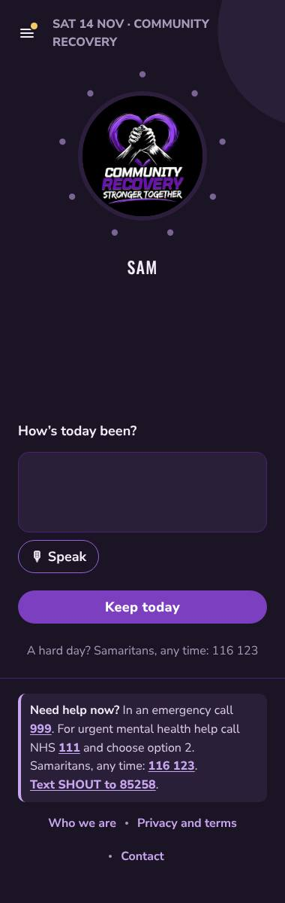
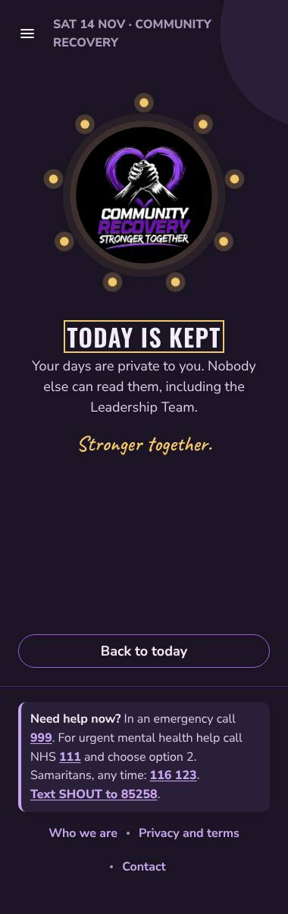
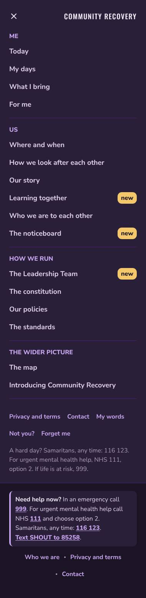
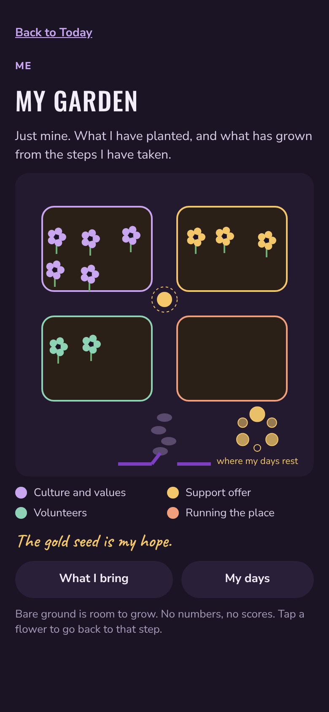
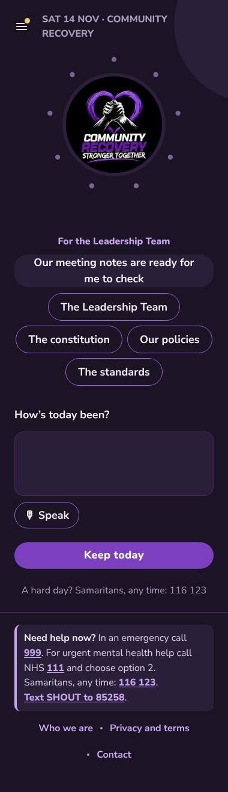
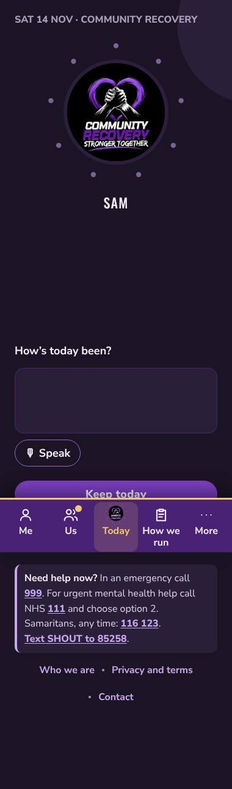
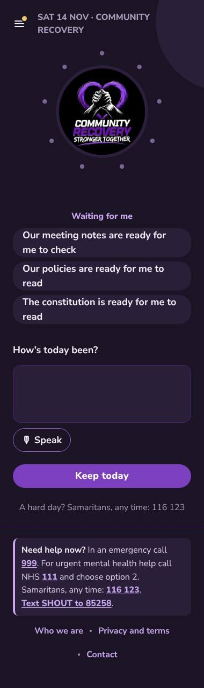
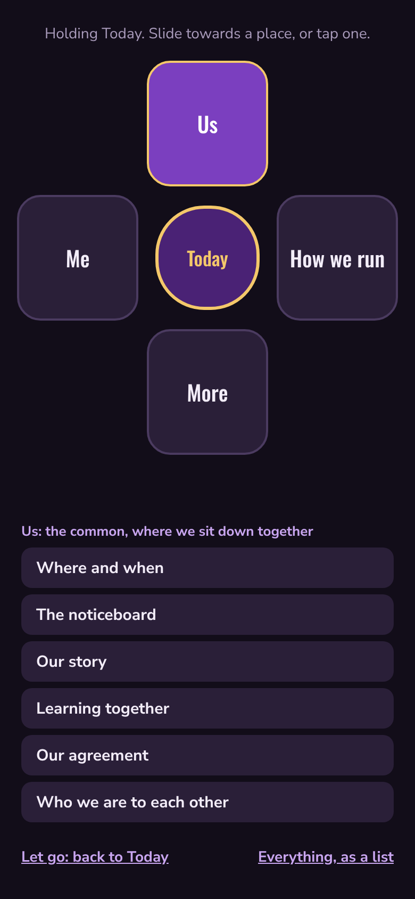
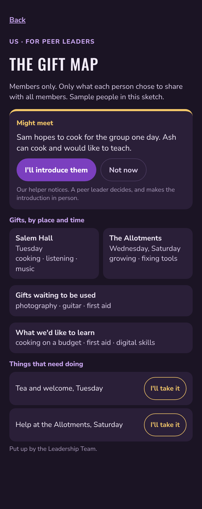

A proposal · from my lighthouse, as Phenomemental
Community Recovery’s app, next.
The third phase of LEROs on the Commons, from Matthew Bushell: where our app is now, what its people need next, how they find their way, what we build next, and how the leaders shape it. My decisions are the ground beneath it; everything else is a branch, kept whole. Everything below reads live from the beach.
Where it stands now, in full 6
1Where the app is nowSeven of ten leaders in since 13 November: what stands, what was lost, what’s going wrong.now · what was lost · what’s going wrong
Where the app is nowas of 15 November
Where the app is now
1In short: seven of ten leaders in since 13 November; Today holds my day; nothing is counted.
More
The app as it stands: its own screenshots, 14 November at 15:51, with a sample member community-recovery #39



What was lost from earlier versionsand comes back
Where the app is now · what was lost
1.2In short: where my days rest went in October and November, and comes back. The count stays gone; the nine dots stay.
More
What comes back, designed on 14 November and not built yet


What is going wrongthree things
Where the app is now · what is going wrong
1.3In short: links piled up on Today, and two builders wrote over each other. The privacy ground stands.
More
What went wrong, the app’s own screenshots of 14 November


2What its people need nextLeaders, members, welcomers and supporters, and where each need came from.4 kinds of people · where it came from
What its people need nextleaders, members, welcomers, supporters
What its people need next
1.1In short: each kind of person, and what they need from the app next.
More
Where the needs come fromthe leaders’ first days
What its people need next · where they come from
1.17In short: what the leaders’ first days in the app showed.
More
Where it showed, the app as it stands, a leader’s name left out

3How people find their wayReal places and times first; the landscape’s four parts group the menu.the way · places and times · the menu’s groups
How people find their wayreal places and times first
How people find their way
1.11In short: real places and times first, and the landscape’s four parts group the menu. A gold button would move me; it isn’t built yet.
More
Is this how people find their way? Its decision is in part seven
The idea, designed on 14 November in the app’s own look, not built yet; try it in part four


Real places and timesSalem Hall and the Allotments
How people find their way · real places and times
1.112In short: four sessions a week at two places, and who’s going.
More
The four parts, as the menu’s groupsthe common first
How people find their way · the menu’s groups
1.114In short: every page has a home in one of the four parts, with the common first and Me at the end.
More
The menu as it stands, beside the draft
4What we build nextFor the builders: five pieces in order, when each is done, where the data lives, the rules.5 pieces · the screens · data · rules · not now · who decides
Five pieces, in orderstepping stones, each with when it’s done
The build, and the run-throughhow each piece goes live
What we build next
1.111In short: each piece useful alone, with a run-through of every screen alongside.
The run-through: the Leadership Team page
Before: one page of about two and a half minutes of scrolling. After: a hub of about three screens, each meeting and the notes behind their own doors.
How each piece goes live
Tap a stone to read it.
Drawn by weft for David’s page, its motion made again here.
How the screens will lookdesigned 14 November, not built yet
What we build next · how the screens will look
1.19In short: nine screens designed on 14 November in the app’s own look. None is built yet.
More
Nine screens, designed on 14 November; none is built yet




In Community Recovery’s own look. The people on the gift map are samples and the grove sizes are illustrative; the words are for the Leadership Team to choose.
Try it: the logo, Keep today, and the gold button
Try it: hold the logo, press Keep today, or hold the gold button and slide.
The lists in the thumb menu are samples: the Leadership Team shapes the menu before it is built.
My garden, alive
A flower opens when a step is taken; a circle at the edge settles as a day comes to rest. No numbers.
Where the data livesthe screens and the blocks they read
Dashed and crimson: new, named by weft before it is built. Everything stands on Community Recovery’s own beach.
The rules that don’t bendeight tiles
Not in this buildten, for later
Who decides, and where to ask
Ask in the room, or on a piece’s thread once it has one.
The builders’ lines in fullfor exact wording
5How the leaders shape itCo-production: when the Leadership Team is asked, what they see, how their answers change it.when · what · how
How the leaders shape itwhen, what they’re shown, how it changes
How the leaders shape it
1.1111In short: once there is something real to respond to, the leaders walk it, answer, name the places and choose the words.
More
1.11119
Is this how the leaders shape it? Its decision is in part seven
The idea, sketched in the app’s own look: the leaders answer a draft line by line
A sketch, not built. It works the way each meeting’s page already does, That’s it or Not quite on each line (community-recovery #30). The words are made up.
6The groundMy decisions of 14 and 15 November, each with its reason and a picture.12 decisions
The decisions of 14 Novembertwelve cards, each with its reason
On 14 November Matthew went back through the original proposal (his Community Recovery page of 27 September, written for David to take to Sheffield), phase one and phase two, side by side with this phase, and answered every place where they differed, one question at a time, then weft's proposal. These are his answers, each with its reason. Phase one has been corrected to match, its old lines kept visible; phase two’s corrections are asked of weft and not yet made (see what nobody knows yet).
7Still openI have answered; David and weft are still to answer.6 decisions · unknowns · the room
Decisions to answersix, with who is asked
About Where the app is now
About What its people need
About What we build next
About How the leaders shape it
About Sundial’s strands
Its decision stands with the strands, in part eight.
What nobody knows yeteach with who carries it
Things nobody has to vote on, but somebody has to find out. Each says who carries it. 7
Talkthreads and the room
No threads yet: each piece of work at the build becomes a thread once its decision stands.
The room
For talk that isn't a decision: questions, ideas, a reason to wait.
Nobody has spoken in the room yet.
8BranchesWhat this phase held beyond the app, kept whole, taken up when the main line needs it.8 branches · Sundial’s strands · drawn in full · a few words
The brancheseight, each with a picture
The living landscapeplay it · 8.1
The neighbourhood seen from the lighthouse, drawn from its draft on the beach: the common at the centre, four neighbourhoods where the standards' four sections stand, the gardens along the top, the gate below. The travelling lights are life moving through it, in gold because they carry no names; the gardens stay shaded, because a garden lights only for its owner.
The landscape as a drawn placedrawn in full · 8.1
Branch · the landscape as a drawn place
8.1In short: lay the place out once, and let every screen be a view of it.
More
From a list of homes to a place
Tap a place to read it.
Every block on Community Recovery's beach has one home; the landscape gives each home a place you can stand in. The words under each place are the draft's own.
From a menu to a place
In phase three every page has a home in one landscape: the common at the centre, four neighbourhoods where the standards’ four sections stand, the gate on the open edge with the lighthouse beside it, and each member’s garden round the edge, private.
Drawn by weft for David’s page, its motion made again here.
How the landscape could be keptweft’s three ways · 8.11
Branch · weft’s three ways, word for word
8.11In short: a map the app draws, now; a world on the beach when it’s ready.
More
Three ways to keep the landscape
Matthew’s answer, 14 November: a map the app draws.
Where the landscape is kept
Drawn by weft for David’s page, its motion made again here.
The view from the lighthousedrawn in full · 8.3
Branch · the view from the lighthouse
8.3In short: each person sees where they are, what's waiting for them, and where life is happening.
More
Finding the way, with one thumb
Hold the heart, then slide your thumb to a place. Or just tap it.
What it does for each person
The thumb in Community Recovery's own colours: Today under the thumb, Us above, Me to one side, How we run to the other, More below. A plain list, Everything, stays beside it for anyone who prefers it. The bar was tried and taken out.
From the lighthouse, as a member
A member sees their own garden, lit only for them, with a word left at its letterbox; what is waiting for them; where the life is; and others only where they have acted in the open. At the foot, the thumb menu: hold Today and slide to Us, Me, How we run or More.
Drawn by weft for David’s page, its motion made again here.
The lighthouse’s picturesdrawn in full · 8.3
Branch · the lighthouse’s pictures
What the lighthouse shows
8.3In short: the life of the place, drawn so people can feel it, members only and never a name.
More
Five ways to see the life of the place
Drawn from a week like this one, to show the shape of it. In the app these read the live place, members only, in gold because they carry no names, and dark until enough people have taken part.
The gift mapdrawn in full · 8.2
Branch · the gift map
8.2In short: the first thing the place shows is what members bring, and who could meet whom.
More
The gift map
Tap an open ring, a hope, to see which gifts could meet it.
Illustration: hopes and gifts invented to show the shape. Seen by members only, each shared on its owner’s yes; the crimson one went wider. What someone could use stays on paper.
A made-up week, with no names
Drawn by weft for David’s page, its motion made again here.
Every LERO, and the earthdrawn in full · 8.5, 8.6
Branch · every LERO, and the earth
8.5In short: the same place for every LERO, each set where it really is.
From the country to the common
The white label
From the country into the neighbourhood
Drawn by weft for David’s page, its motion made again here.
Sundial’s strandssix, each with a picture · 5
In short: what Sundial carries, laid out so each part can be taken up on its own.
Read it in full
Which to take up nexta decision for David and weft
A few words, in plain wordsten terms
- A LERO
- A lived experience recovery organisation: built by people in recovery, for people in recovery.
- Community Recovery
- A LERO in the making in Wellingborough, meeting at Salem Hall and the Allotments. This proposal is about its app.
- The beach
- The open ground where everything here is kept, a line at a time, each line in its place.
- The landscape
- The shape behind the app: its four parts group the menu, with the common first. Drawn as a place, it is a branch.
- A neighbourhood
- One of four parts round the common, standing where the four sections of the national LERO standards stand.
- My garden
- Each member’s own place, private: their hope, their gifts, their days and the steps they’ve taken.
- Our wood
- The 33 standards as four groves, a tree for each, growing as the community shows them in what it does.
- The lighthouse
- The sign at the front, where a person sees where they are, what’s waiting for them and where life is happening.
- A decision card
- One question at the end of a step, answered with a word and a line of your own.
The plain page, drawn from the blocks alone: happyseaurchin.com/proposal/leros-phase-three. Phase one is LEROs on the Commons; phase two is privacy first. The page on David’s site, drawn by weft: happyseaurchin.com/leros-phase-three.